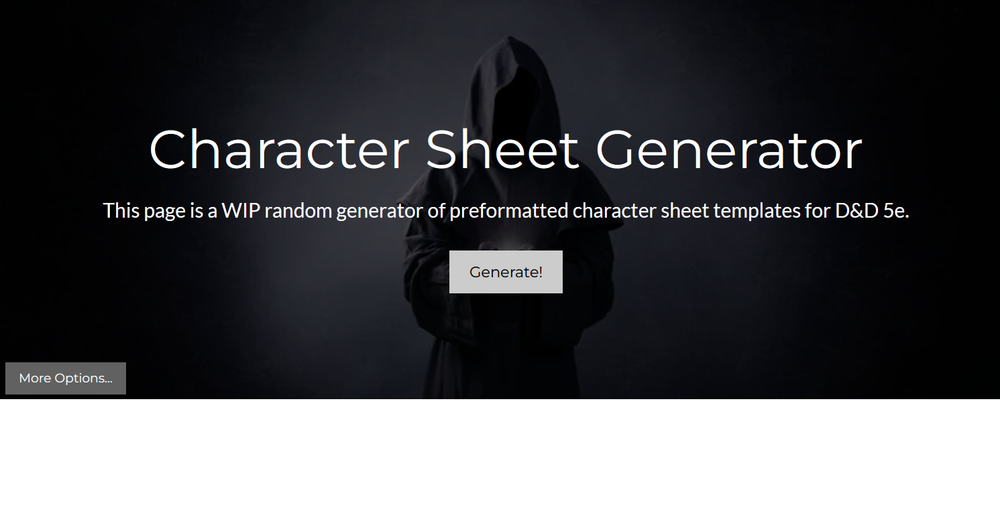
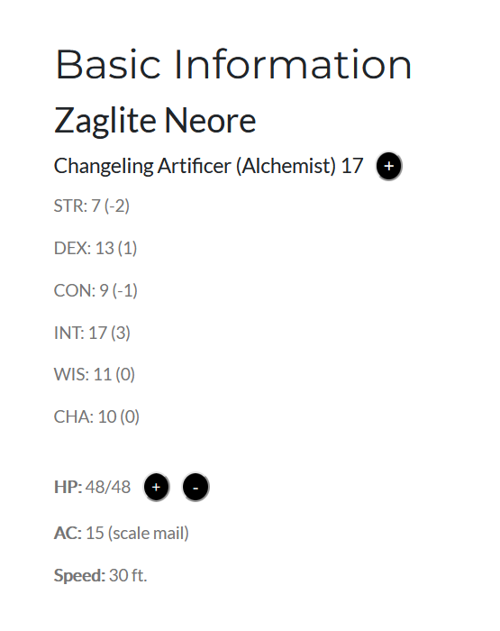
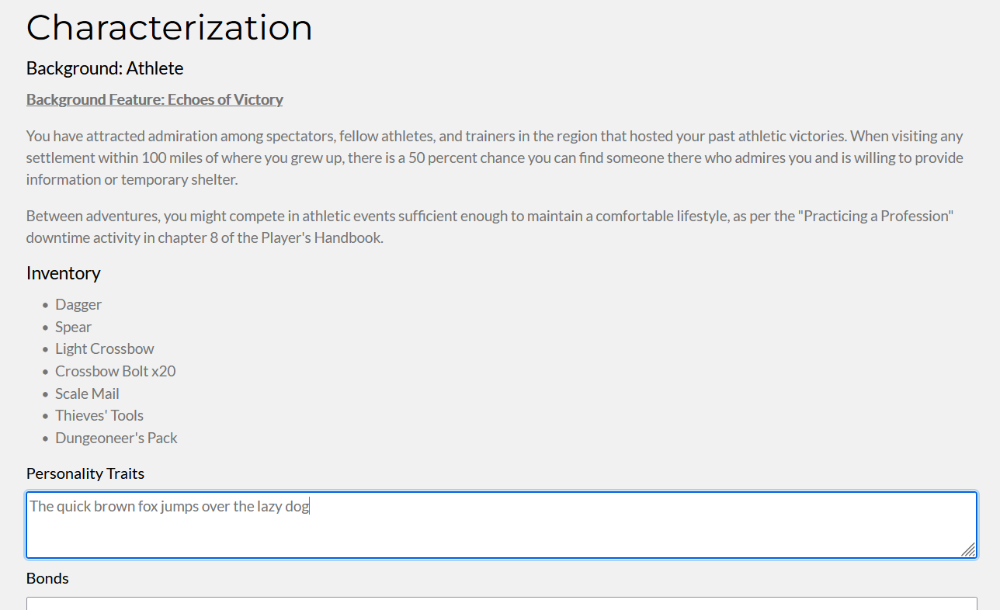
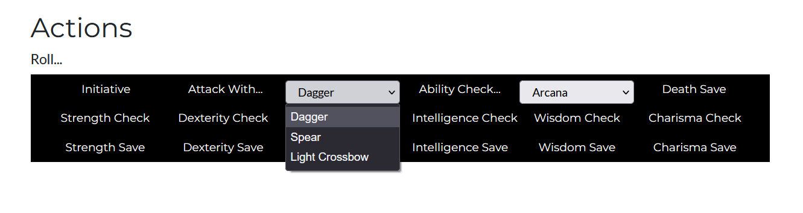
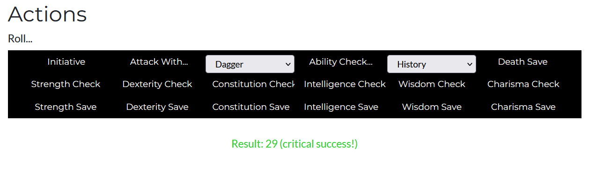
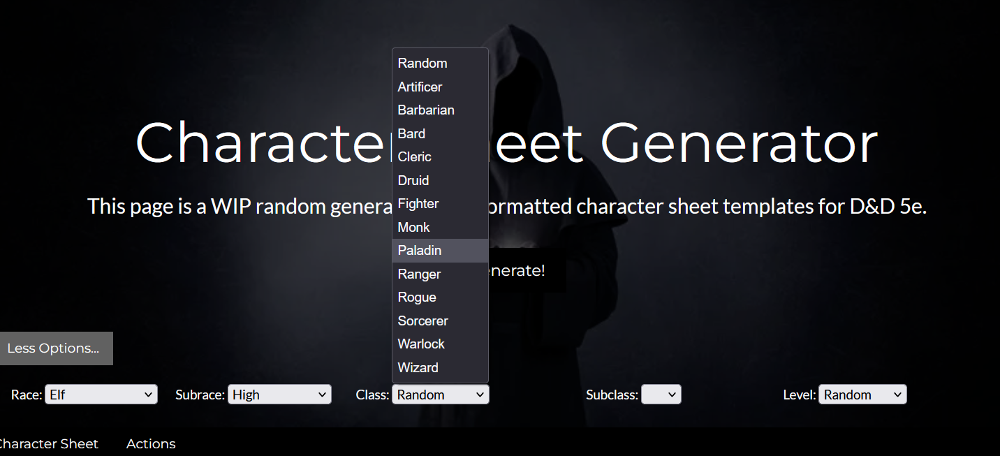
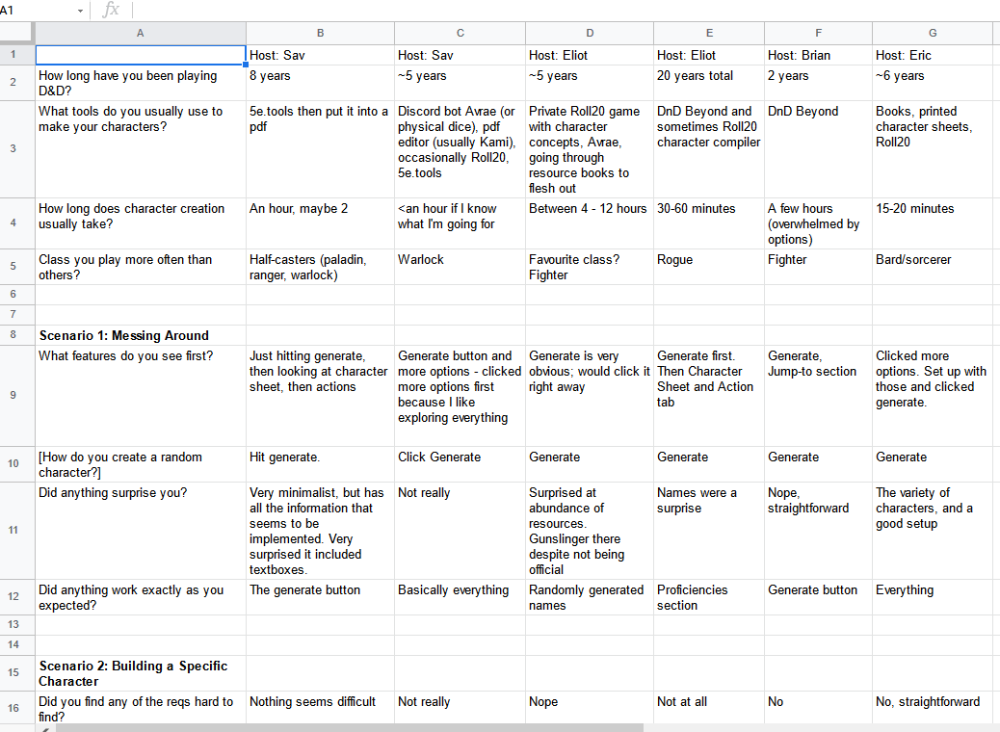
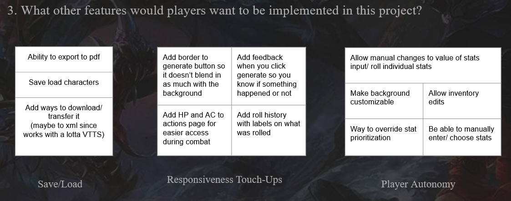

Results from the Usability Study we conducted on our Character Sheet Generator.
You can view the generator itself here!
Jump to...
In this research project, we will be going over the frustrations that DnD players often face during the setup and encounter process. From these issues, we created a potential solution in resolving the time consuming process in DnD while retaining the flexibility to customize the details to the user’s desired preferences. This study showed how to improve the current prototype, and what features might be added in the future for a better overall user experience.
Prior to this usability study, we conducted a survey on a widely-used D&D VTT application, Roll20. Many of the respondents of that survey reported frustrations with the process of creating characters and running combat. The Character Generator tool was built as a means to ease much of the character creation process, and integrates a roll panel including many of the rolls commonly used during combat scenarios in order to improve the efficiency and flow of both processes.
In this usability study of our product, our overarching research questions were:
What are areas that are not obvious in their use in our prototype?
Can our tool make it easier to create a backstory for a new character?
What other features would players want to be implemented in this project?
In this project, we as a group created a D&D 5e Character Sheet Generator to speed up the process of character creation. As the lead programmer, I created the prototype website itself based off of the requirements elicited by the group.
Website development took place over the course of several weeks, as massive amounts of data had to be manually imported into the code to create data blocs to fill the randomized fields.
While I've worked on random generators before- especially name generators (the name generator for this prototype was imported and modified from a Sylvan Name Generator I had previously built)- this project was of a scope larger than almost any I've done before in terms of data flow. With the exception of that time I made a dungeon crawler, there haven't been many instances where I've had to handle as much IO and generation as here.
I did, thankfully, learn a decent amount in coding this project, on the function-oriented interactions between HTML and Javascript, and how to send fields back and forth for quick detection and conditional builds.
The research method was a usability test conducted online or in-person. For online participants, surveyees shared their screens with the interviewer and observer while performing each task. Participants were friends and family of the survey conductors, and had been playing D&D for at least two years.
Each study took about half an hour, and the surveyors rotated with each participant. Participants answered questions about their experience prior to, during, and after use of the tool, and notes were taken during the study about what did and did not go well or as expected.
Data Analyzer - Analyzed the data and made the decisions on what worked and what didn’t.
Data Organizer - Took the gathered information and organized it into an easy to understand format.
Interviewer - The person helping guide the usability study; the person in contact with the user.
Observer - A person who was not in contact with the user and was studying and taking notes on the reactions of the user.
While each member had a different ‘primary’ role for each usability test, a lot of them were intermixed and dependent on one another. The interviewer would first have to conduct the study, and the observer would watch the process live or through a recording of the usability study, writing down the participant’s responses. The data would be handed off to the data organizer, who would then assemble the data in one place, and who would then pass off that data to the analyzer for everyone to look over together at the end.
In terms of what went well, all members were able to coordinate their studies and complete them in a timely manner. Our team communicated regularly over Discord, and though we didn’t meet synchronously very frequently, we did collaborate on documents and review edits made as they were in development.
In terms of potential improvements to our collaboration, it would likely be beneficial for us to have met more frequently synchronously in order to conduct practice studies on one another beforehand, or more rigorously test the prototype before the actual studies. A few of the bugs participants found with the prototype or potential improvements were things that could be fixed quickly and easily, so if we had elicited those beforehand, we could have a more polished product prior to testing.
Thank you for agreeing to participate in this usability study. In this usability study, we will be testing a fast and easy way to create new characters; additionally, we will be asking you about some of your experience with character creation in the past, and to try out our prototype of a character generator.
As a reminder, please feel free to voice your thoughts out loud and say whatever comes to mind as you try out our prototype. All comments and feedback will help us a lot!
The overall study will take roughly 15-25 minutes and feel free to take breaks or ask us to slow down anytime during the study.
Pre-Questions:
First we’re going to have you open the prototype and poke around a bit.
Scenario 1: Screwing Around
Now we’re going to create a specific kind of character.
Scenario 2: Creating a Specific Character
Pretend that after playing around with the character generator, you finally decided on a specific character build.
Moving on: it's time for a bit of rolling!
Scenario 3: Time to Hit Stuff
Now imagine that you’re currently playing a spontaneous one-shot with your friend who’s narrating a story for you. Your friend says, “Your character is walking home along the countryside after a long day at work, when suddenly, three kobolds spring out from the bushes, surrounding you! They brandish daggers and slingshots, ready for a fight!”
In this last task, we’re going to have you use this site as a launchboard for creating a new character, including a bit of personality and backstory.
Scenario 4: Stretch the Imagination
Imagine you just joined a new campaign and are coming up with a completely new character for it. The DM has told you a bit about the world and story: in a homebrew campaign with a 5e base, you and your party happen to be in the same town where a mysterious tower has suddenly sprung up from the ground. People have tried to enter, only to find that it doesn’t actually go up - it goes down, leading into what seems to be miles of winding tunnels filled with monsters. The mayor has offered a handsome reward for anyone who is willing to find its end and figure out the mystery behind the tower.
Post-Questions:
Thank you again for your participation! This is the end of the study.
Key benefits of using the usability test is that we were able to see in real time how an actual user would use the product and find any design flaws easily. Having a user demonstrate their process allowed us to easily catch segments that went well, segments that needed improvement, and elicit bugs in the working product.
Some drawbacks were the rigid outline of the script itself; D&D is typically a more open process during hosting, where the players choose how their character acts and reacts to certain situations. By following a tight script, the player autonomy during sections such as simulated combat was limited to the scope of our testing, so we couldn’t get as robust of a view on how the product would actually be used in such situations.
Lessons we learned about using this method included how to conduct a live usability study, how to adapt to participants finding flaws in the prototype, and how to elicit valuable feedback from our participants regarding the satisfaction with our product.
All research participants successfully completed all tasks with this usability study. Some research participants were surprised by the “abundance of resources” while others mentioned the site was minimalistic and straightforward. The site did everything that was expected of it; generating characters was accomplished by clicking the “generate” button and certain aspects of the character were able to be locked in. The overall feedback on the site was positive with some mentions for improvement. The ability to allocate or override the stat prioritization was requested by multiple participants. A couple participants also commented on providing feedback for the “generate” button. This would allow the user to know if a new character was successfully created. While two of the six participants mentioned that it did help them in generating a backstory for their character, the rest of the participants reported that the tool did not influence their ability to develop their character further.
In terms of using this tool in the future, all participants who reported they would do so mentioned its use specifically as an non-playable character (NPC) generator. Part of this may be contributed to the fact that there is currently no way to export a generated character through the site itself, and saving a generated character’s information must be done manually by the user.
During combat, it was noted that it took surveyees an extra step to switch between their character page and actions page in order to see all the relevant information they needed. This can be reduced by adding certain information blocks into the actions page, or by having the actions page somehow embedded into the character information page.
The following are some images of our working prototype in use.
Figure 1: Front Page of the Prototype
Figure 2: Character Basic Information after a Random Generation
Figure 3: Character Background Sections with Open Text Fields
Figure 4: Selecting a Weapon for an Attack Roll
Figure 5: A Critical Success on a History Check
Figure 6: Selecting a Class in the "More Options" Section
To use the prototype yourself, click here.
The following are some images of our collected data.
Figure 7: The Spreadsheet Used for Data Collection
Figure 8: Synthesis of User Wants Based on Data
To view the full data set, click here.
In terms of limitations, it is first important to acknowledge that our study took place in the context of a hybrid modality. One test was conducted with observations taking place in-person, while the others were conducted over Discord, with participants sharing their screen. Additionally, the study was not restricted to a desktop platform, so one test was done on a mobile platform. The variety of platforms and modality may have contributed to bias in the data; Because we could not feasibly evenly distribute tests between modalities, testing for usage on mobile and with the context of an in-person study is relatively lacking in robustness in data compared to testing remotely on desktop.
Second, the participants of this study were not selected randomly, and so inference about causation cannot be made in terms of the data. Most participants were immediate contacts or friends of one or more of the interviewers, which may have removed some of the formality of the study.
Thirdly, almost all of our participants were experienced D&D players. Much of the data within the generated character sheets is understandable in the context of a user who has a grasp on the rules of D&D. However, for newer players, this may not be the case. Going forward, it may be worth conducting a secondary study of this manner, targeted specifically toward users who have little or no experience playing or hosting D&D, in order to attain a better understanding of the prototype’s functionality in the context of a user unfamiliar with the game.
The majority of respondents, when asked on if they would use this product in the future, said that they would use it for the creation of NPCs (non-player characters). This elicits an important distinction in the usability of our product: when creating player characters, players focus more on their desires and autonomy in terms of the character, and thus would rather take a slower manual approach than a quick automatic approach using the generator. However, in the case of non-player characters, which would likely be used primarily as combatants for player characters to face, the details and specifics are less important than creating a usable sheet quickly. Thus, the primary benefit of the prototype we have created is its efficiency rather than modularity or robustness.
The participants’ feedback on features they wished to have added or improved in the future was perhaps the most valuable in terms of immediate improvements to the generator. Some participants stated desires for features that were originally planned to be in the prototype, but were cut or left partially finished due to limitations on time. We believe that the following features, which participants recommended adding, could be feasibly added in the near future:
Additionally, the following features were recommended by participants, which could be added, given adequate time:
Finally, participants were able to elicit the following bugs, which should be fixed in the future:
Once again, a massive thank you to those who participated in this study.
Want to learn more about this study or the making of the Character Sheet Generator? Email me at savannadoescollegestuff@gmail.com!